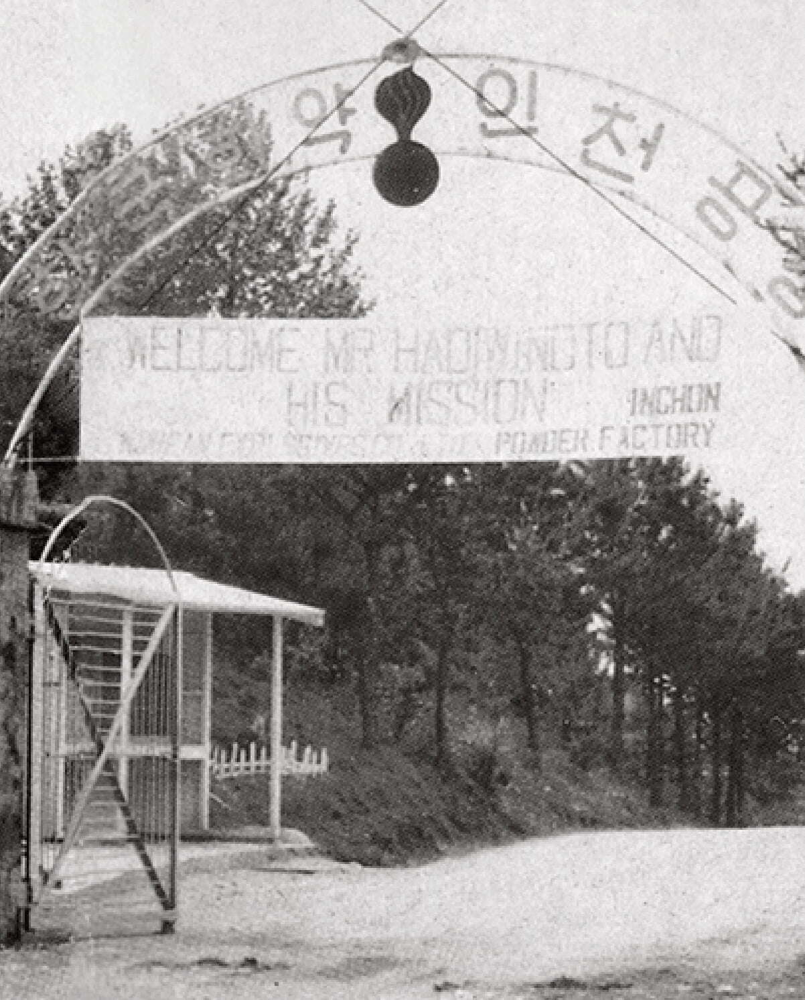
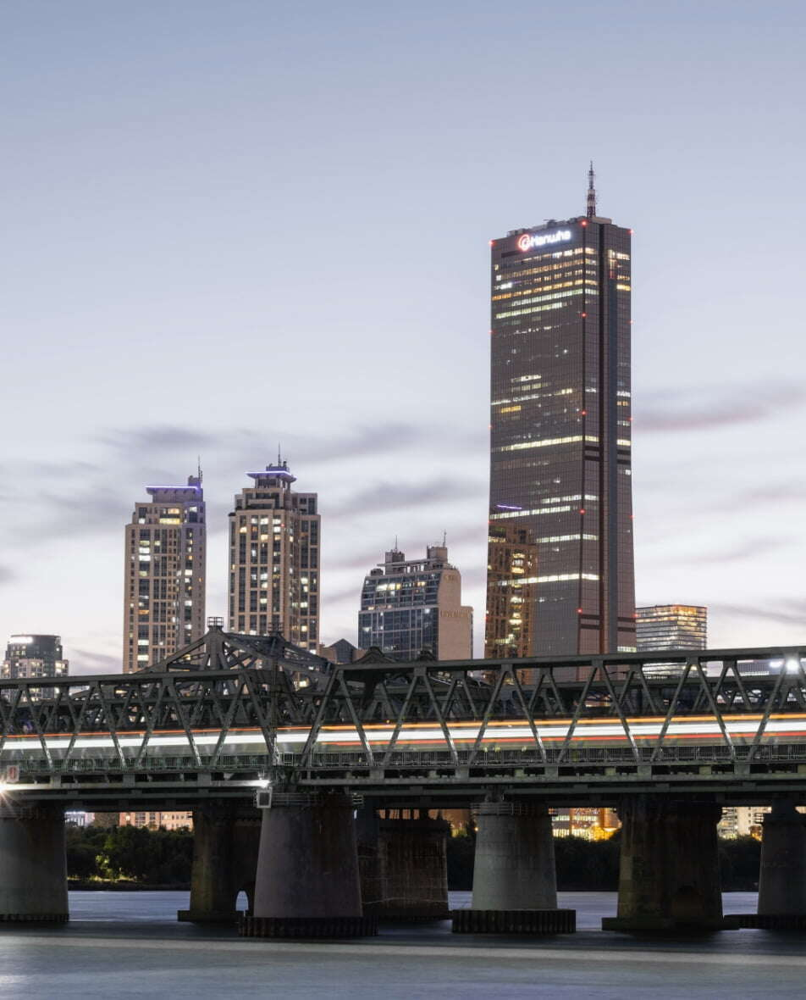
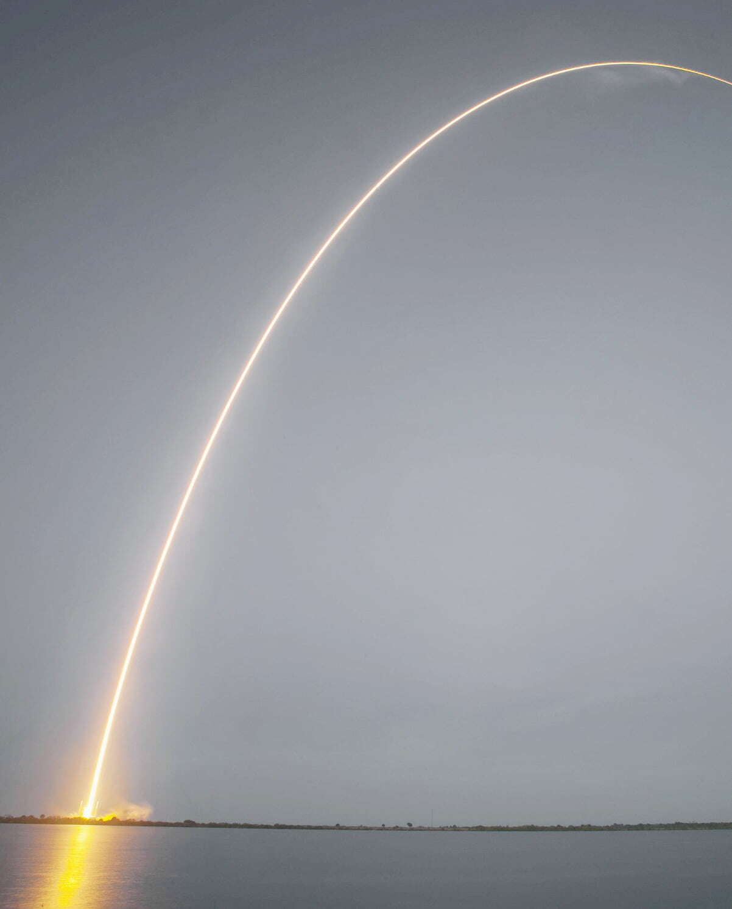
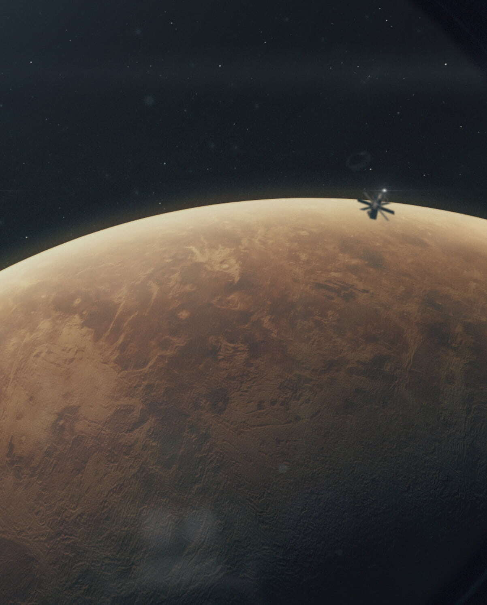
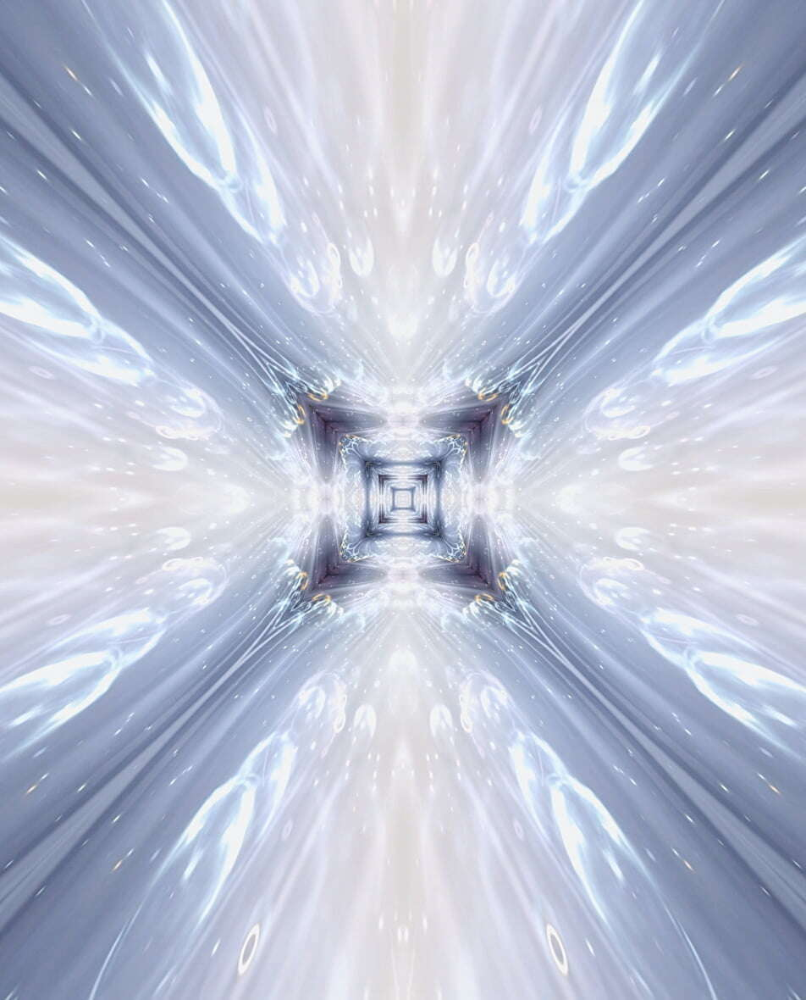

Sustainable technologies
for our future generations
한화에어로스페이스의 존재 목적은
사람, 지구 그리고 미래에 있습니다.
혁신기술로 사람간의 거리를 좁히고
지구의 지속적인 성장에 기여하며 다음 세대를 위한
미래를 준비합니다.
Devotion for the nation
-

1952년 6.25전쟁 중에 설립된 한화는 국가재건, 산업화에 기여하면서 우리나라와 함께 성장했습니다.
-

한화에어로스페이스는 국가 존립에 반드시 필요한 방위산업을 선도하면서 미지의 세계인 우주를 향한 담대한 도전에 나서고 있습니다.
Invaluable path for better world
-
우주·항공·해양·방산 분야에 혁신기술을 적용해 내실있는 성장과 지속가능한 미래를 위해 노력하고 있습니다.
-

누구나 갈수 없고, 누구도 가지 않은 길을 걸어온 한화는 포춘 500대 기업으로 성장했습니다.
Our promise for brighter tomorrow
-

한화에어로스페이스는 미지의 영역을 탐사하기 위한 미래 핵심기술을 개발하고 있습니다.
-

사람, 지구, 그리고 미래를 위해 한화에어로스페이스는 지속가능한 기술로 어제보다 더 나은 세상을 만들어 갑니다.
한화에어로스페이스의 존재 목적은
사람,지구,그리고 미래에 있습니다.
지속적인 기술 개발을 통해
지구의 영속적인 성장에 기여하며
미래 세대가 살아갈 새로운 환경을 구축할 것입니다.